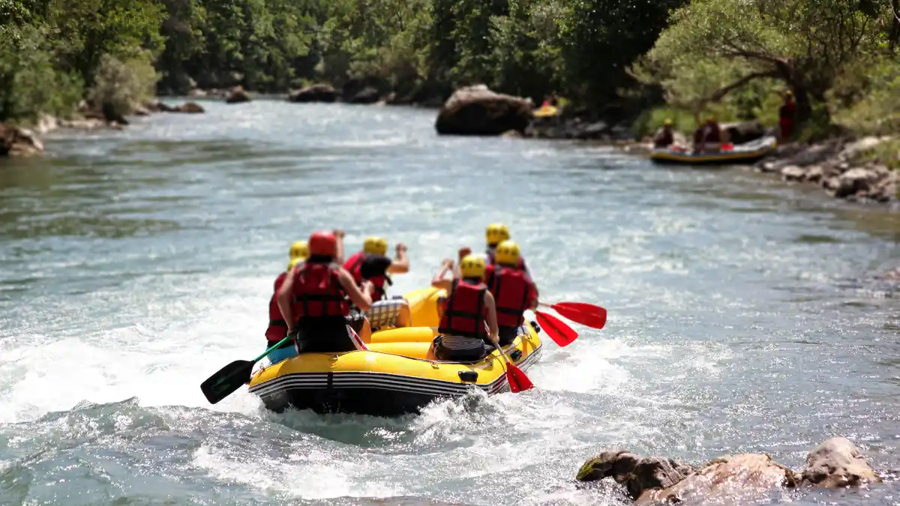

1. Mengapa Memilih Vendor Outbound Berizin Resmi Sangat Krusial?
Dalam memilih vendor outbound profesional, tim procurement dan HRD wajib memverifikasi lima pilar kriteria: legalitas badan usaha resmi (PT/CV) yang mampu menerbitkan e-Faktur PPN dan SPH formal; fasilitator bersertifikasi BNSP (Badan Nasional Sertifikasi Profesi); peralatan dengan sertifikasi keamanan UIAA/CE; rekam jejak portofolio instansi nyata; serta SOP manajemen risiko & asuransi peserta yang jelas.
Kegiatan outbound di alam terbuka melibatkan aktivitas fisik, dinamika kelompok, dan terkadang wahana berketinggian (*High Ropes*) atau wisata air seperti Rafting Arung Jeram. Memilih provider non-formal (freelancer tanpa badan hukum atau calo perantara) membawa risiko besar: mulai dari bahaya kecelakaan fisik tanpa SOP P3K standar, hingga kendala laporan keuangan yang ditolak tim audit internal karena ketiadaan faktur pajak resmi.
Panduan ini disusun oleh tim Tentang Vendor Outbound ID untuk membantu tim Purchasing dan panitia gathering melakukan evaluasi vendor secara objektif dan sistematis.

Apa Itu Outbound? Pengertian, Modul & Manfaat untuk Tim Perusahaan
Pelajari konsep dasar dan 5 manfaat strategis outbound training bagi produktivitas organisasi.
2. 5 Kriteria Wajib dalam Memilih Vendor Outbound Profesional
A. Status Entitas Bisnis & Kelengkapan Faktur Pajak
Pastikan vendor beroperasi di bawah badan hukum resmi (PT atau CV) yang terdaftar di Kemenkumham, memiliki NIB (Nomor Induk Berusaha), NPWP Perusahaan aktif, dan status Pengusaha Kena Pajak (PKP). Dokumen ini penting agar perusahaan Anda dapat mengkreditkan PPN dan melampirkan bukti pengeluaran yang sah (*accountable*) saat audit tahunan.
B. Fasilitator & Game Master Bersertifikat BNSP
Fasilitator outbound bukan sekadar pemandu sorak (*entertainer*). Mereka harus memiliki sertifikasi profesi dari BNSP (Badan Nasional Sertifikasi Profesi) skema Fasilitator Utama atau Madya Experiential Learning. Sertifikasi ini menjamin kemampuan mengelola dinamika kelompok, menyampaikan sesi *debriefing* analitis, dan mengantisipasi bahaya di lapangan.
C. Standar Keselamatan Peralatan (SOP Safety & UIAA Standards)
Untuk modul simulasi seperti Offroad Jeep Bromo, Rafting, atau Flying Fox, tanyakan spesifikasi alat yang digunakan. Provider profesional hanya menggunakan tali kernmantle, carabiner, harness, dan helm yang memiliki sertifikasi standar keselamatan internasional UIAA (*International Climbing and Mountaineering Federation*) atau CE.
D. Transparansi SPH (Surat Penawaran Harga)
Hindari penawaran harga 'murah' yang menyembunyikan biaya-biaya esensial di belakang (seperti tiket masuk venue, sewa lapangan, banner, sound system, atau tim medis). Proposal dari vendor profesional mencantumkan rincian inklusi dan eksklusi secara gamblang tanpa biaya siluman (*no hidden costs*).
E. Portofolio Klien & Dokumentasi Dokumentatif
Mintalah bukti dokumentasi kegiatan yang pernah ditangani. Provider terpercaya memiliki portofolio menangani instansi BUMN, korporasi swasta multinasional, kementerian, hingga institusi pendidikan dengan testimoni kepuasan yang dapat diverifikasi.

Pemeriksaan alat keselamatan (*safety gear check*) secara berkala adalah SOP wajib yang tidak boleh diabaikan oleh provider outbound terpercaya.

Team Building vs Fun Games: Kenali Perbedaannya Sebelum Memilih Paket
Panduan menentukan paket yang paling cocok antara rekreasi ceria atau pelatihan kompetensi.
3. Matriks Penilaian Vendor: Framework 4 Dimensi Tim Purchasing
Gunakan tabel matriks evaluasi berikut sebagai panduan scoring objektif saat membandingkan proposal dari 3 atau lebih vendor outbound:
| Dimensi Penilaian | Indikator Standar Berkualitas | Risiko Jika Diabaikan | Standar Vendor Outbound ID |
|---|---|---|---|
| 1. Legalitas & Pajak | PT/CV Resmi, NIB OSS, NPWP aktif, SPPKP, e-Faktur PPN valid. | Sanksi pajak, kontrak sengketa tidak sah, laporan ditolak finance. | ✓ Berbadan Hukum Resmi, penerbitan e-Faktur PPN 11% & SPH berkop PT. |
| 2. SDM & Fasilitator | Fasilitator & Game Master berlisensi BNSP skema Experiential Learning. | Simulasi garing, tidak ada insight kerja, instruksi membingungkan. | ✓ 100% Lead Trainer Bersertifikat BNSP & jam terbang tinggi. |
| 3. Safety & Manajemen Risiko | SOP P3K, rasio pengawas 1:10 peserta, alat bersertifikasi UIAA/CE. | Risiko cedera fatal, kelalaian penanganan medis darurat. | ✓ Zero Accident Protocol, tim medis standby, asuransi kecelakaan. |
| 4. Fasilitas & Dokumentasi | Include lapangan, sound system outdoor, spanduk, foto & video Full HD. | Biaya membengkak karena panitia harus sewa alat tambahan terpisah. | ✓ All-in Full Package, file dokumentasi Google Drive & Flashdisk. |
4. Mengapa Korporat & BUMN Memilih Seven Star Vendor Outbound ID?
Sebagai penyedia jasa outbound terkemuka di Jawa Timur, Vendor Outbound ID menawarkan kepastian kualitas dan ketenangan pikiran bagi tim panitia:
- Jangkauan Lokasi Terlengkap di Jawa Timur: Kami memiliki kemitraan eksklusif dengan puluhan venue resort, camp ground pinus, dan lapangan outbound terbaik di Batu, Malang, Mojokerto (Trawas/Pacet), Bromo, dan Banyuwangi.
- Modul Custom Sesuai TNA Perusahaan: Modul permainan dirancang spesifik berdasarkan sasaran pelatihan (misal: penguatan target penjualan, sinergi pasca merger, atau kepemimpinan manajer).
- Dokumentasi Sinematik Profesional: Seluruh paket kami dilengkapi tim fotografer & videografer profesional (termasuk rekaman drone) untuk konten *branding* internal perusahaan.
- Pilihan Paket Terpadu: Dari program Team Building Perusahaan, Family Gathering, hingga petualangan alam seperti Outbound + Camping.
Siap Menerima Proposal Resmi & Penawaran Harga Khusus?
Konsultasikan rencana kegiatan kantor Anda dan dapatkan Surat Penawaran Harga (SPH) resmi berkop perusahaan dalam 24 jam.
Kesimpulan
Checklist Final Sebelum Memilih Vendor Outbound
Keputusan memilih vendor outbound adalah investasi penting bagi keselamatan peserta dan kesuksesan agenda pengembangan SDM perusahaan Anda.
- Verifikasi legalitas badan usaha dan kemampuan penerbitan e-Faktur PPN.
- Pastikan fasilitator memegang sertifikasi resmi BNSP dan menerapkan SOP safety berstandar tinggi.
- Hubungi konsultan Vendor Outbound ID untuk survey lokasi dan konsultasi kebutuhan rundown secara gratis.
Pertanyaan yang Sering Diajukan (FAQ)

Arby Ardiansyah
Konsultan senior pengadaan program experiential learning dan outbound gathering korporat dengan rekam jejak mendampingi ratusan proses procurement instansi pemerintah dan perusahaan swasta di Jawa Timur.